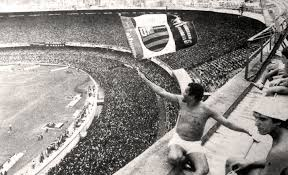

O Flamengo foi fundado em 17 de novembro de 1895 para as disputas de remo. A entrada da equipe no futebol aconteceu em 1912. Atualmente, o time rubro-negro é o maior vencedor da história do Campeonato Carioca, com 31 títulos. Segundo diversas pesquisas, é o clube com o maior número de torcedores do País. Os dois principais títulos da história do Flamengo ocorreram em 1981. Comandado pelo ídolo Zico, o time conquistou a Copa Libertadores da América, em final contra o Cobreloa, do Chile, e o Mundial Interclubes, diante do Liverpool, da Inglaterra. Foi na década de 1980, também, que o Flamengo conquistou o seu primeiro Campeonato Brasileiro.
O Maracanã e o Flamengo têm uma história inseparável, com o estádio se tornando o palco de grandes momentos para o clube desde sua inauguração em 1950. O Flamengo, com sua enorme torcida, sempre foi uma presença constante no estádio, conquistando títulos importantes ao longo dos anos, como o Campeonato Brasileiro, a Copa Libertadores e até o Mundial de Clubes. Nos anos 1980, o Flamengo viveu sua fase de ouro, conquistando títulos históricos, sendo o Maracanã o palco da vitória na Copa Libertadores de 1981 e do Mundial de Clubes, quando derrotou o Liverpool. O estádio também foi cenário de inúmeras vitórias no Campeonato Carioca e outros campeonatos nacionais, com o time consolidando sua fama.
Até os dias atuais, o Maracanã continua sendo um local fundamental para o Flamengo, com a torcida fervorosa sempre lotando as arquibancadas. O estádio é também o cenário de grandes clássicos, como o "Fla-Flu", e momentos emocionantes, consolidando o Flamengo como um dos maiores clubes do Brasil e do futebol mundial.
Em 1969, o Flamengo ganhou um novo mascote. A torcida rubro-negra, em sua maioria, era composta por pessoas de baixa renda, negras e da periferia. Os rivais usavam este fato para proferir insultos racistas contra os flamenguistas, chamando-os de “urubus”, o que nunca foi bem recebido pelos torcedores até o dia 1º de junho daquele ano. De acordo com o site oficial do clube, às vésperas de um clássico contra o Botafogo, quatro amigos (Luiz, Romilson, Victor e Erick), fartos dos cânticos racistas, resolveram levar um urubu ao Maracanã. Mas depois de algumas tentativas frustradas de capturarem uma ave da espécie, enfim conseguiram o pássaro em um lixão, com a ajuda de um gari rubro-negro. O quarteto então levou o urubu, envolto em um lençol. No dia do jogo, os amigos levaram a ave para o Maracanã e conseguiram passar pela segurança do estádio ao esconderem o urubu com uma bandeira do Flamengo. Pouco antes da bola rolar, o pássaro se soltou e foi para o gramado, junto com a flâmula rubro-negra. Inflamada, a torcida flamenguista começou a cantar: “É urubu, é urubu!”